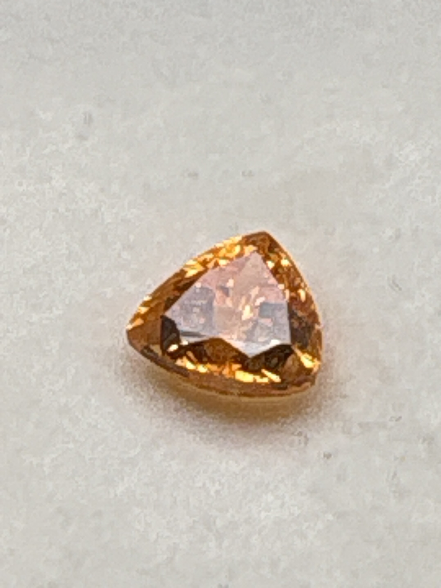

The Gem Drawer › No. 42

A vivid orange 7.3 mm trillion — spessartine garnet at close to three carats.
| Catalogue no. | #42 |
|---|---|
| As labeled | Mandarin Garnet (Spessartine) - AS LABELED, vivid orange, worth comparing before pricing given size/color, see notes |
| Shape / cut | Trillion (triangular) |
| Weight | 2.97 ct |
| Measurements | 7.3mm trillion cut |
| Colour | Vivid orange |
| Clarity / condition | Not recorded |
Interested in this stone, or in the collection as a whole? Terry VanWormer can answer questions about it.
Click here to inquireor email Terry directly at maxrebo34@gmail.com